Cyanotype
a basemap printed in sunlight
Akhila · Meet the Cartographer · Geog 572 Lab 3
scroll ↓
Light, blocked
A cyanotype records light. Paper coated with iron salts turns Prussian blue wherever the sun hits it. Anything laid on top blocks the light, so its outline stays white. Anna Atkins used this process in 1843 to make the first book illustrated with photographs, pressing algae and ferns directly onto the sheet.
I treat the basemap the same way. Land is the exposed sheet. Water is the darkest exposure. Mapped features are objects laid on the paper, so they print in white or pale blue. With only one hue, every bit of contrast has to come from value, line weight and texture.
This page walks through how I built that idea into a slippy tileset in Mapbox Studio, from the inspiration board to the final map at the bottom.
Three prints
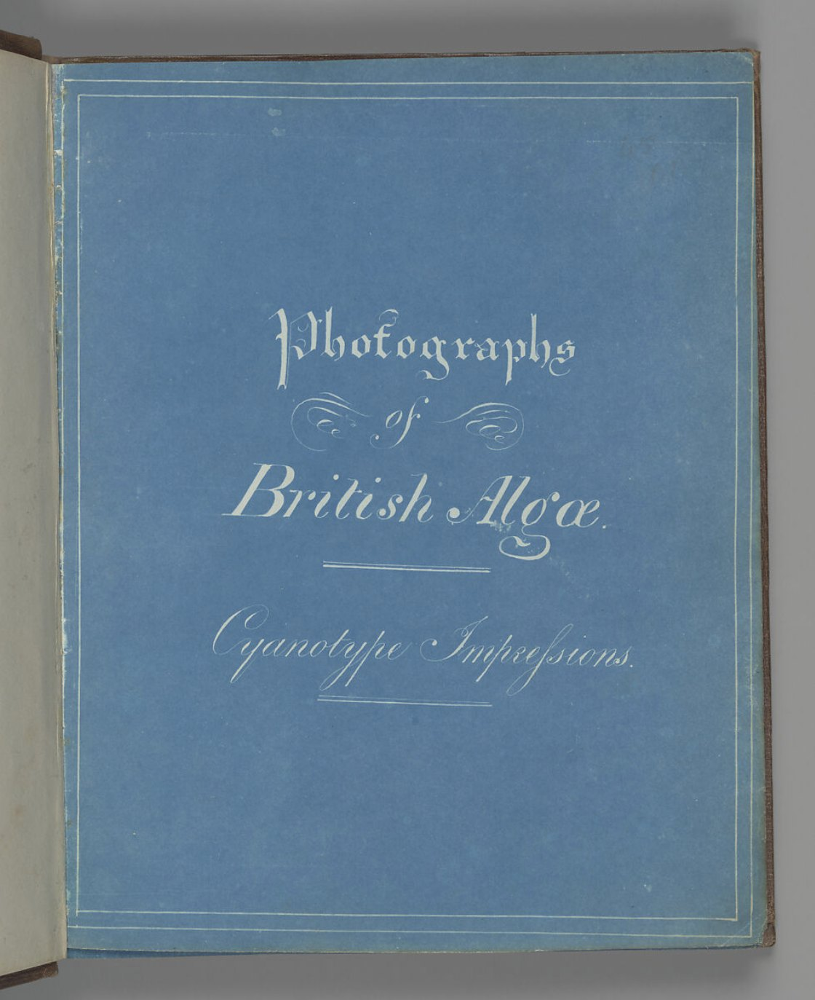
Type and texture: white hand lettering on blue and an uneven, brushed emulsion.
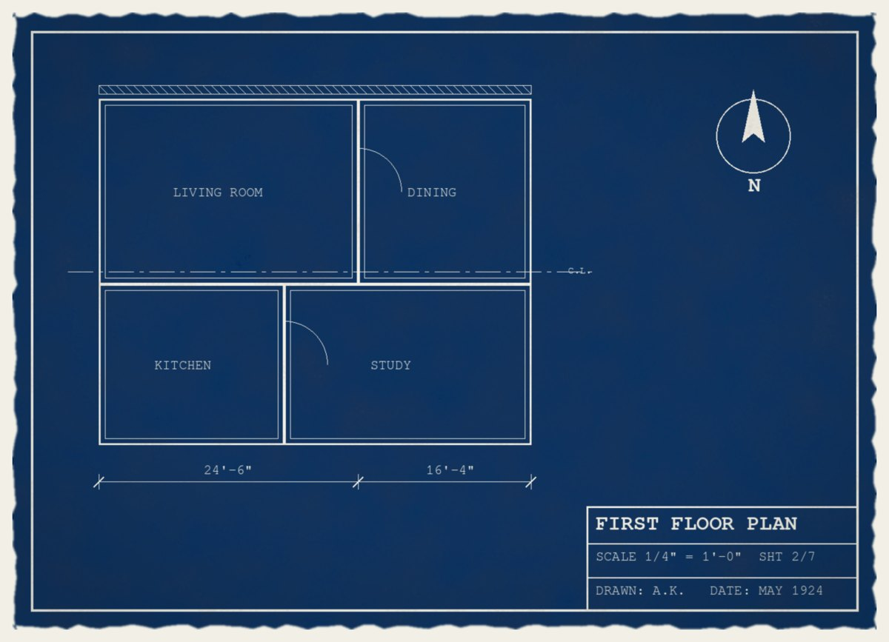
Form and type: hairline drafting lines, double-line walls, dash-dot center lines, hatching and title-block lettering.
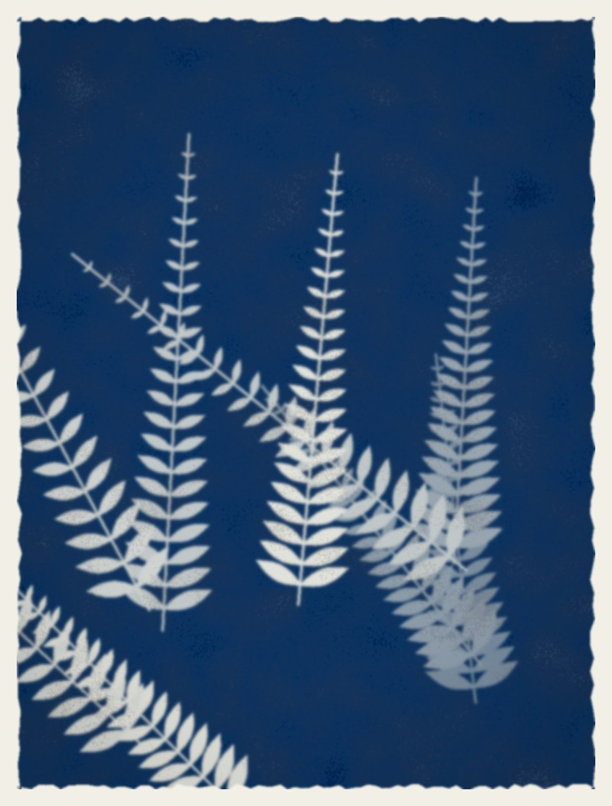
Color: fronds pressed flat print white and raised ones print pale blue, so one hue still gives a clear hierarchy.
Style statement
Whatever blocks the sun stays white, and everything exposed turns Prussian blue. The blueprint gives me a line vocabulary. Atkins gives me the texture, the hand-set type and the soft white halo around each specimen. The fern plate shows that one hue at a few values is enough for a hierarchy.
Mood
Pleasant and mildly deactivating: calm and quiet. Low contrast inside the blue keeps the map calm, and the white hairlines suggest scientific care.
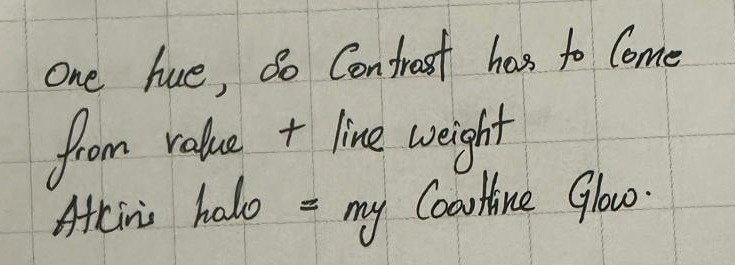
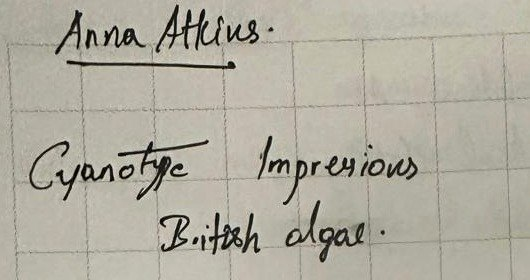
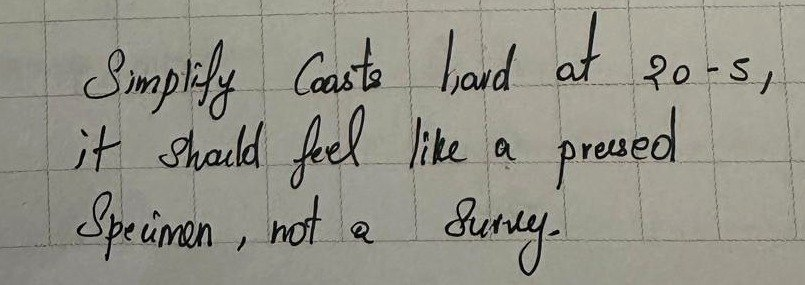
Notebook pages from the first week of the project.
Breaking the prints apart
I broke the board into the four parts the director asked for: color, type, form and texture. Every rule below became one or more layers in the Studio style.
Color: one hue, seven values
water
land, background
landuse, buildings
parks, vegetation
minor lines, halos
major lines, labels
custom data only
Darker means more exposed. Water is darkest, land is the middle value, and features get lighter as they rise in the hierarchy. Iron Stain is the one warm color, and I keep it off the basemap so it stays free for thematic data.
Type
Special Elite, caps, 0.3 em
IBM Plex Mono, 9-12 px
Plex Mono Italic, spaced
halo Prussian 1.5 px, blur 1
Special Elite has the uneven strike of a typewriter, close to hand lettering on a title block. Plex Mono reads like drafting notes.
Form: line vocabulary
Texture: patterns uploaded to Studio
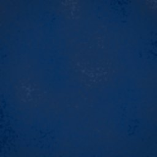
background-pattern, all zooms
fill-pattern, water
fill-pattern, parks z12+
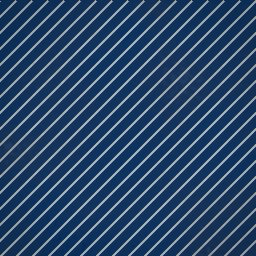
fill-pattern, buildings z15+
Studio has no paper overlay or blend modes, so the texture lives inside the patterns on the background, water, parks and buildings. I redrew each one as a tileable SVG because Studio only accepts SVG images.
From sheet to tiles
The map behind the next cards is the live tileset. Each card moves it to a place and zoom that shows one design rule. The readout in the corner tracks the zoom level and which of my three scale bands it falls in: Specimen (z0-5), Survey (z6-11) and Plan (z12+).
Ruled boundaries
Country borders use the dash-dot center line from the blueprint, in Paper White at 85% opacity. They have butt caps and no casing, so they stay crisp like ruled lines. States get a short dash at 50%. Both fade after z11, where streets take over.
The Atkins halo
The coast is a 0.6 px Paper White line drawn over a 3-5 px blurred Faded Cyan line. That blur fakes the glow around Atkins' algae, where light crept under the edge of the specimen. My notes said the halo reads best at small scales, so its opacity drops from 0.55 at z0 to 0.25 at z15.
Hollow motorways
Motorways and trunks are hollow double lines, made with line-gap-width so the ground shows through, like double walls on a floor plan. The gap grows from 1 px at z5 to 12 px at z18. On bridges I draw a strip of Prussian Ground inside the gap first, so roads passing underneath do not show through.
Hairlines and ticks
Streets are Faded Cyan hairlines, 0.5 px at z12 and 1 px by z16. Rail swaps from a plain line to a ticked line-pattern at z12. Walking paths appear at z14 as dotted lines with round caps, the lightest marks on the map.
Exposure as hierarchy
Here the whole value ladder is visible at once. Lakes Mendota and Monona are Deep Exposure. The isthmus is Prussian Ground with urban landuse in Mid Exposure at 40%. Parks print in Pale Frond, and roads and labels sit on top in Faded Cyan and Paper White. Nothing on the basemap leaves the blue.
Title-block lettering
Places are set in Special Elite. Cities are uppercase with 0.3 em tracking and sit beside a square marker, like a survey benchmark: open for cities, filled for capitals. Towns switch to title case at 11-13 px. The markers drop away at z12-13, once the street grid locates the place on its own.
Quiet water labels
Water names use Plex Mono Italic in Faded Cyan, lowercase and widely spaced, with a Deep Exposure halo. Oceans and seas switch to spaced caps. Every label has a 1 px halo blur, so the type bleeds slightly into the ground, like ink on damp paper.
Terrain as uneven exposure
Hillshade uses Deep Exposure for shadow and Faded Cyan for highlight, at an exaggeration of only 0.25. Mountains look like places where the emulsion went on thick or thin. At mid zooms the hillshade carries most of the texture. Contours join at z13, every 50 m, in Faded Cyan at 22%.
Pressed fronds
From z12, parks switch from a flat Pale Frond fill to the frond-print pattern at 70% opacity. The fronds in the pattern come in two strengths, white for leaves pressed flat and pale for raised ones, the same split as the fern plate.
Floor-plan buildings
Buildings stay flat, with 3D off, to keep the print feel. They appear at z14 as Mid Exposure fills. At z15 they gain a 45-degree drafting hatch and a 0.5 px Paper White outline, so a city block reads like a page from the blueprint. Museums, schools and libraries get a small crosshair symbol in place of the default Maki icons.
One place, six zooms
Every panel is centered on the Wisconsin State Capitol in Madison. The goal was one consistent print from the globe to the street, with no jarring jump between bands. Each band adds detail but keeps the same rules: white for what blocks light, darker blue for what is exposed.
Six very different places, one zoom
All six panels are at z11. I picked places that push different parts of the style: open water, mountains, desert, a dense city, rainforest rivers and a northern coast. The style has to hold up when one kind of feature fills the whole frame.
Mock-ups next to real tiles
My spec sheet included three concept mock-ups on made-up geography. Here each one sits next to a real place at a similar zoom.
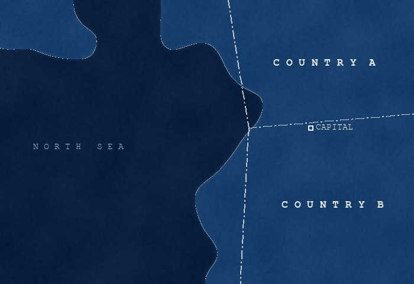
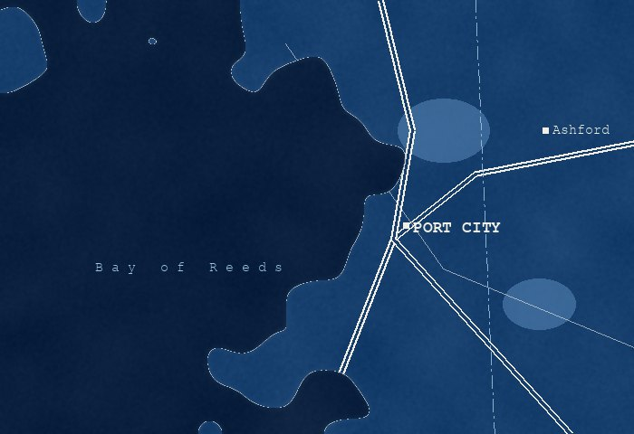
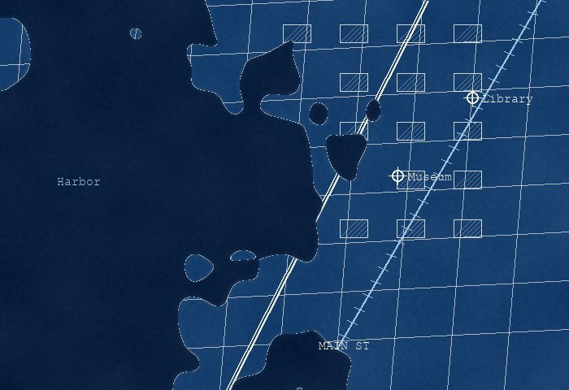
Where the medium pushed back
- Park and peak names. The spec set them in Pale Frond. On top of a Pale Frond park they disappeared, so I moved them to Faded Cyan.
- No paper overlay. Studio has no blend modes, so grain lives in the background and water patterns instead of one sheet over everything.
- Approximate halos. The blurred line under the coast fakes the Atkins glow, but it cannot spread into the land the way real emulsion does.
- Coast simplification. I wanted very simplified coasts at z0-5. Mapbox Streets already generalizes them, and Studio cannot simplify further, so the halo and soft color do that job.
- Fonts. Special Elite and Plex Mono only cover Latin script. Every label falls back to Arial Unicode MS, and I use English names where they exist, so cities like Tokyo and Cairo still get labels.
- Pattern scale. Patterns do not scale with zoom. I kept the tiles small (16-256 px) and tested them at z12 and z16.
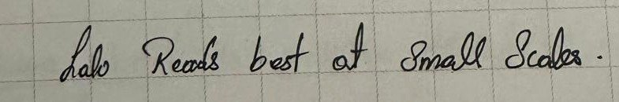
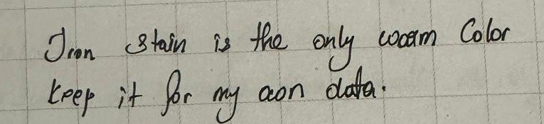
Explore the print
Pan and zoom anywhere from z0 to z22. Try your own neighborhood, then zoom out to the globe.
Credits
Map design and text: Akhila, Geog 572: Graphic Design in Cartography, Lab 3.
Basemap built in Mapbox Studio from a blank style. Data: Mapbox Streets v8, Mapbox Terrain v2 and Terrain-DEM v1, © Mapbox © OpenStreetMap contributors.
Inspiration: Anna Atkins, Photographs of British Algae: Cyanotype Impressions (1843-53), The Metropolitan Museum of Art, public domain. Anna Atkins and Anne Dixon, Cyanotypes of British and Foreign Ferns (1853). Architectural blueprint, c. 1920s.
Fonts: Special Elite (Astigmatic), IBM Plex Mono and IBM Plex Sans (IBM). Page built with ScrollMap and Mapbox GL JS.